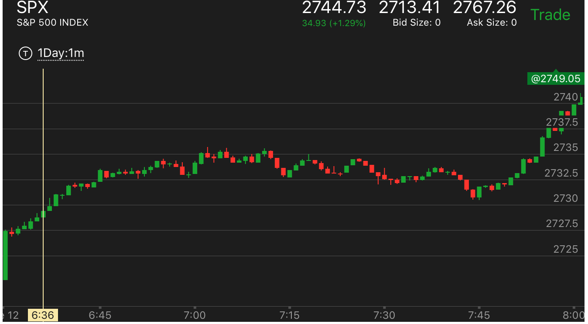
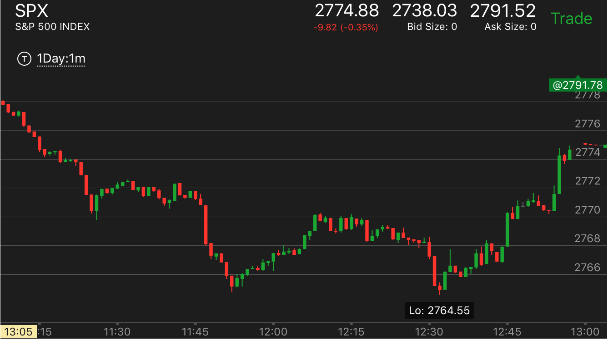
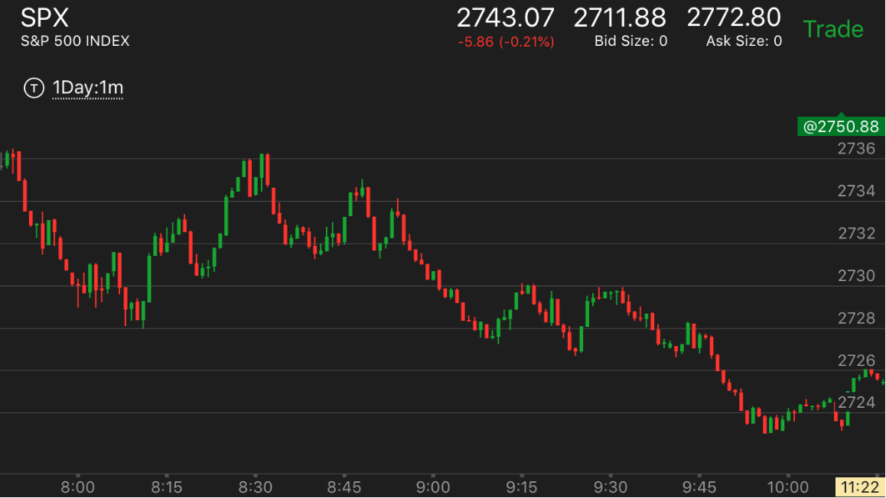
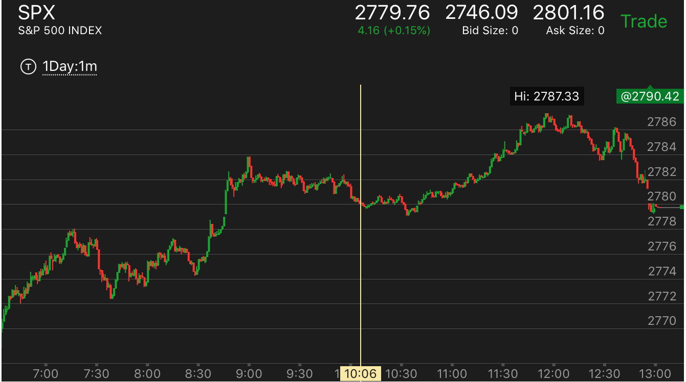
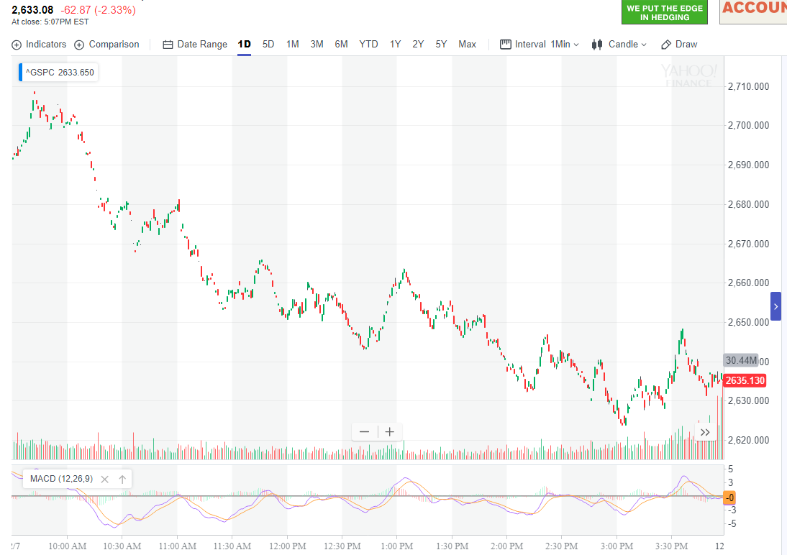
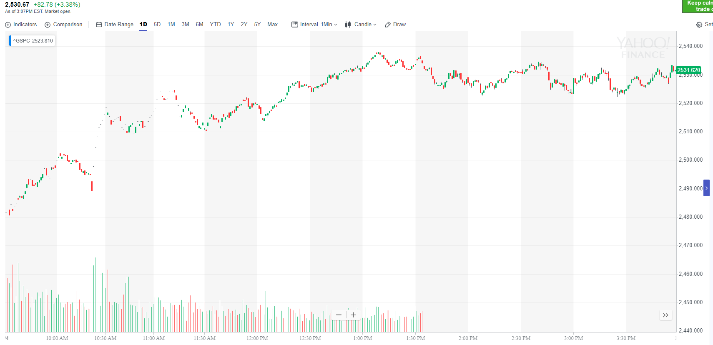
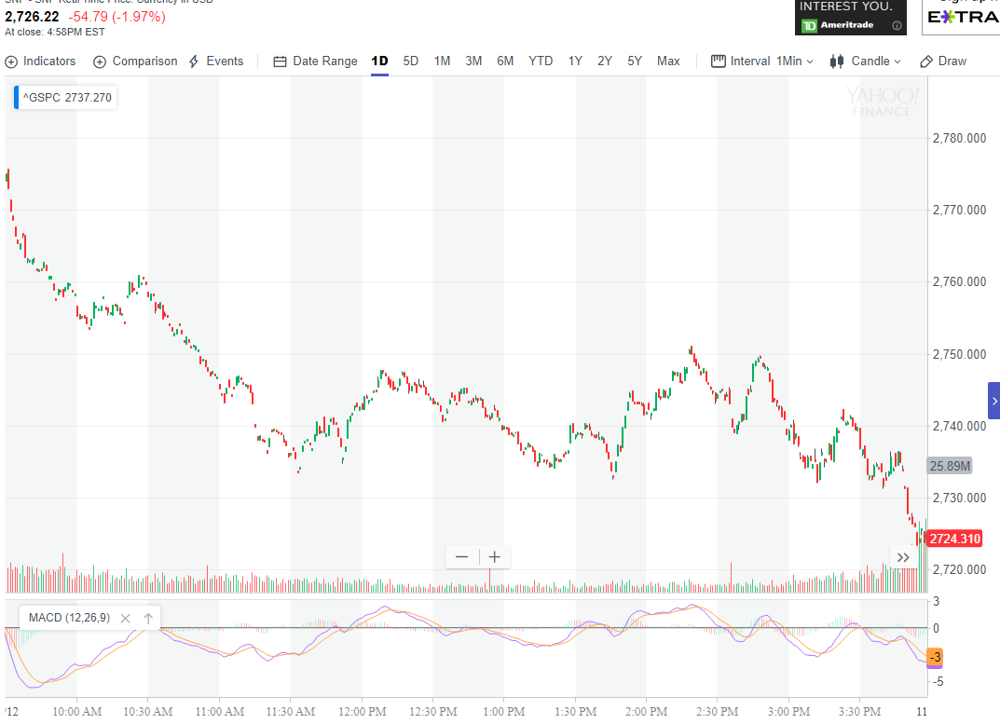
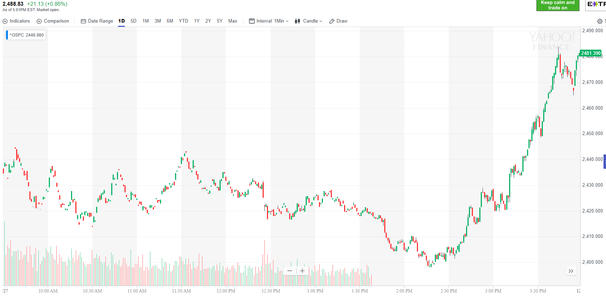
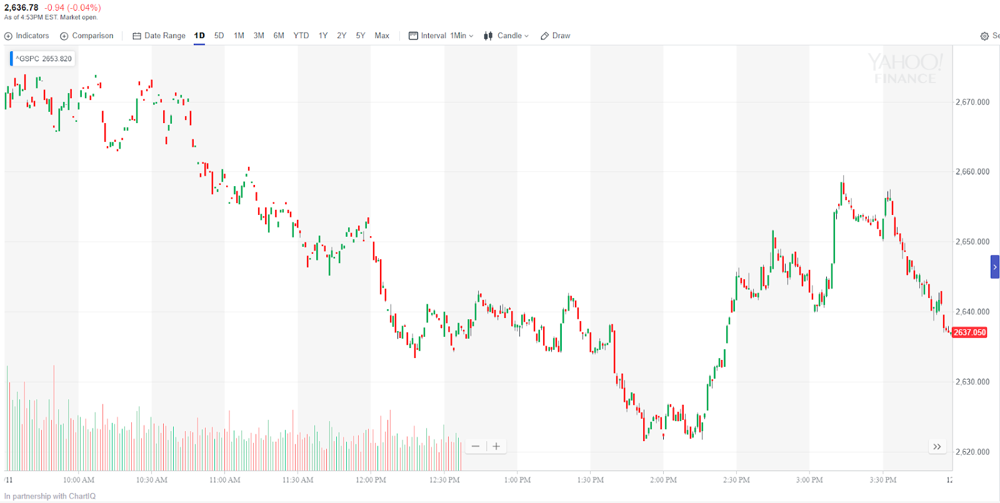

真空走势
- 一个真空走势，第一浪开始的时候，通常会填补，如果填补了。
它会创新低或者新高。很少停在原来的低点或者高点。可以用相对力量分析。
-
如果一开盘就连续大涨或者连续下跌。那么不能算真空。真空只有开盘后，涨了再跌，或者跌了再涨，才能算真空走势。
-
如果一个走势发动的时候非常强大，那么也不会有真空。或者真空只有填一部分，不会都填。
-
真空走势在上升和下跌都会出现的。基本意思就是，大盘不会有真空。但是其实也有条件。比如在下跌或者上涨的时候，
不能有长时间的走平震荡。如果有 ，那么随后出现的大涨或者大跌，都不会回调的。
-
真空走势在下跌的情况下，如果配合大盘再出现距离很远的双底或者底部双重跨越走势。那么会形成一个大涨。这个大涨一定要拿住了。
不能反向做空。但是有时候也会停止在阻力点。这个和很多因素有关。特别是在熊市中，如果连续大跌，那么可能引发大涨。
-
如果大盘在一个地方徘徊很久，然后大涨或者大跌，那么也不会回填真空。
真空走势
开盘后出现缓慢上涨，
然后走平，那么这个走平点会是真空的开始。
填补真空后，返回原位，双底后突破前面的关键点
利用真空走势来判断跌幅或者涨幅。
跌势中，双峰或者多峰来填补真空
TOP
开盘后出现缓慢上涨，然后走平，那么这个走平点会是真空的开始。
可以想象，会有人在这个点开始做空。以后回调就不会低于这个点

图示：开盘后，缓慢上涨，6：40开始在2732 走平。然后继续上涨。这样，它后面回调的时候，要继续大涨，一定会回调到2732这个位置才算填补了
真空。然后才大涨。
填补真空后，返回原位，双底后突破前面的关键点
TOP

图示：11：45直接跨越下跌。但是这个已经是第二次跨越了。所以具备反弹的条件。它在关键点走平很久后，下来。
创新低，然后反弹，形成了双底。然后缓慢上涨。最后大涨。突破了前面的关键点。这个说明关键点并不是不可逾越的。只要条件具备。它很容易被跨过。
跌势中，双峰或者多峰来填补真空
TOP
双峰或者多峰，通常离关键点很远，就停下来了。这样实际上没有填补，
只好用这种方式来填补。

图示：9:10开始反弹，但是不到前面的关键点，就开始走低。
注意观察，9：25它走的更低了。但是仍然反弹，几乎到了前面的高点，然后走平一段时间。这个就是填补真空了。
这样虽然不到前面的关键点，也是一种填补。然后继续大跌。
利用真空走势来判断跌幅或者涨幅。
TOP

图示：10：30出现大涨。形成一个2779开始的真空。它开始下跌后，12：55的时候，它跌倒了2782时候，走平。
这个时候，可以利用真空走势判断，它不会反弹。它会继续大跌。

图示：10：00下跌20个点，但是这个是在徘徊很久后发生的。所以不会填补真空。
另外它是先上涨，走平，然后下跌的。其实真实的下跌并不大。只有10个点。

图示：10：20出现了两段下跌走势后，它在10分钟内暴涨30个点，非常的强。而本身处于升势。
这个空就一直没有填补。

图示:开盘后迅速下跌。跌幅很大。可以看到一个很大的真空。但是这个真空不会被填补的。
因为不知道在开盘前发生了什么。

图示:10：30出现了一个真空。非常的小。它进而出现了双底。说明要涨。但是它很快就涨完了。
1：50出现了真空。它反弹也很小。然后它继续下跌。出现了一个两段下跌走势，才到达底部。这样，它既是真空，又是两段走势。
可以说会是一个大涨走势。

图示:1:50出现大跌，然后一直走平，反弹很小。这样就形成了真空走势。会大幅反弹的。